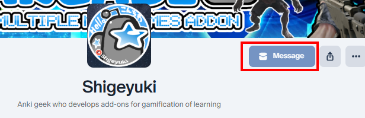

📨Report and Request
💖Patreon

- If you become a paid Patron you can send direct messages to me.
- You can still use direct messages after you cancel the paid subscription.
- If you join for free you cannot use this function.
🌐AnkiWeb
- For free add-ons released on AnkiWeb you can easily contact me via rating comments. (Add-on page -> Rate This)
- AnkiWeb will send you an email when I reply.
- High rating increases priority of development.
👨🚀Reddit Direct Message: Shige-yuki
- I have answered on Reddit about the use of Anki and add-ons.
- You can upload images.
- If you want to mention me ->
u/shige-yuki
🌟AnkiForums
🌟AnkiForums Direct Message: Shigeyuki
- Official AnkiForums, it's a good place for open discussion.
- Images and codes can be used.
- If you want to mention me ->
@Shigeyuki
🐙Github
Free addons : 🐙Github : my_addons/issues
Patreon addons : 🐙Github : AnkiArcade/issues
- Images and codes can be used.
- Long term issues and requests are eventually posted to Github to manage tasks.